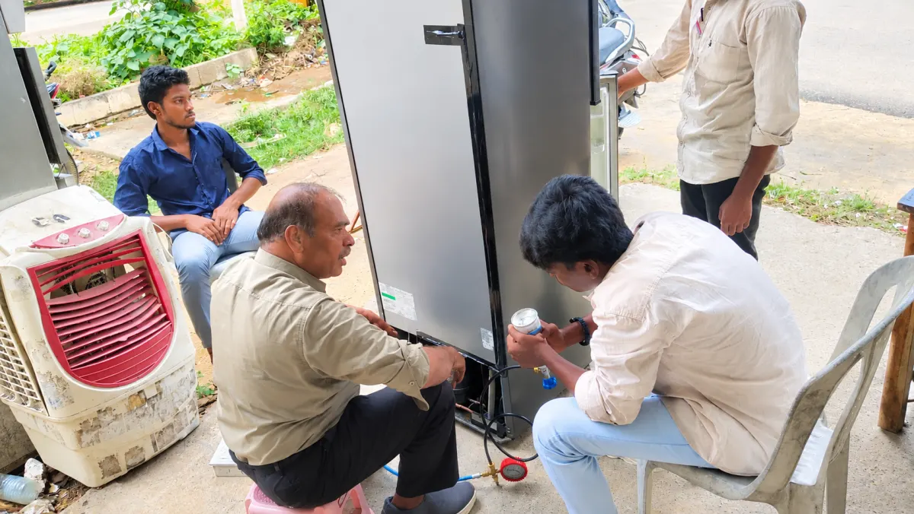

Home Appliance Repair Course in Hyderabad
Diagnostic servicing and repair for fans, irons, mixer-grinders, washing machines, microwaves, and domestic appliances.
- Duration
- 3-4 Months
- Eligibility
- Basic technical inclination; open to all learners
- Fee
- Subsidized (non-profit)
- Training
- Hands-on practical labs

About the Home Appliance Repair Course
Home Appliance Repair trains technicians to diagnose and repair popular household electrical appliances. With rising domestic appliance usage, this course provides immediate wage employment in authorized service centres or self-employed on-call appliance repair businesses.
What You Will Learn
- Ceiling fan rewinding, bearing replacement and capacitor testing
- Mixer-grinder motor repair, blade assembly and coupler replacement
- Electric iron, geyser, and water heater element servicing
- Semi-automatic and automatic washing machine diagnostics
- Microwave oven troubleshooting and safety protocols
Jobs After This Course
- Technician at appliance service centres
- Appliance repair shop
- On-call home repair services
Frequently Asked Questions
Who can join the Home Appliance Repair course?
Basic technical inclination; open to all learners.
How long is the Home Appliance Repair course?
3-4 Months. Classes are hands-on, with most of the time spent practising in the lab.
What is the fee for the Home Appliance Repair course?
The fee is subsidized. Asha Jyothi is a non-profit training centre, so fees are kept low for every student. Call your nearest campus for the current fee and batch timings.
What jobs can I get after the Home Appliance Repair course?
Technician at appliance service centres; Appliance repair shop; On-call home repair services.
Where can I join the Home Appliance Repair course?
Asha Jyothi runs classes at three campuses: Alwal (Secunderabad, 80196 80291), Medchal (77803 46642) and Chegunta (99498 09263). Call the campus nearest you to check when the next batch starts.